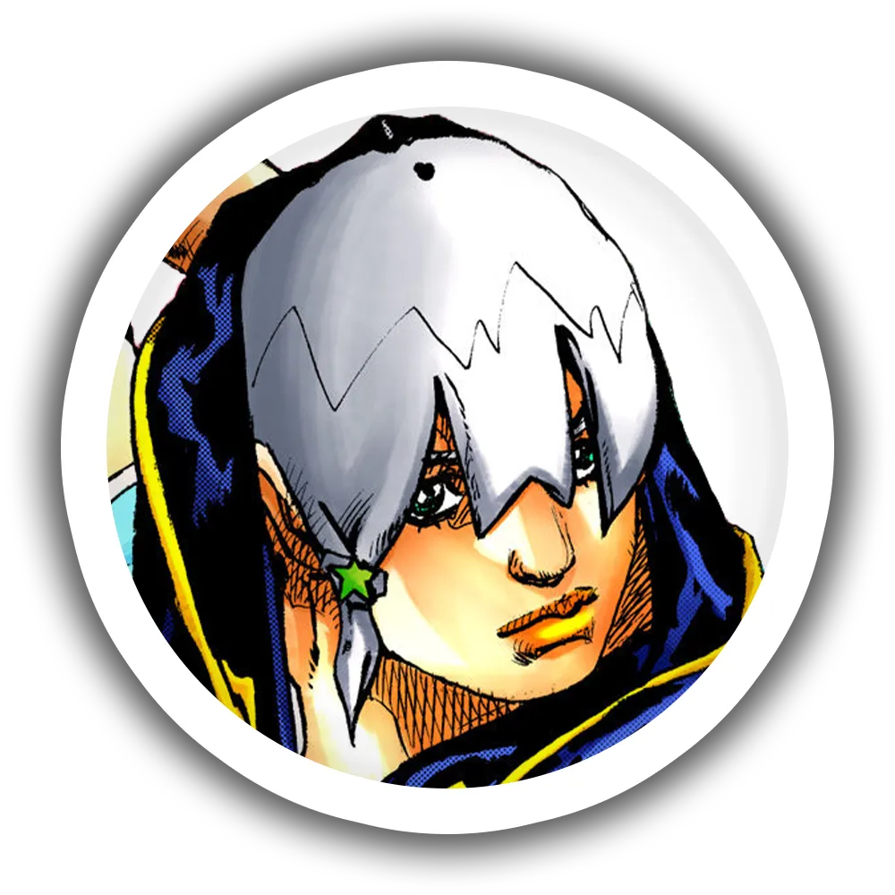
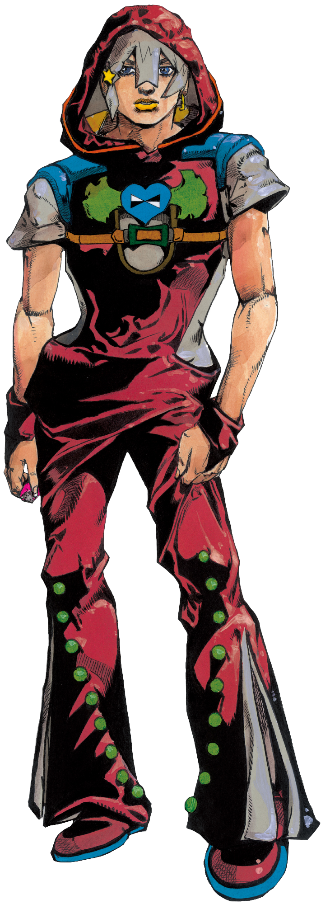
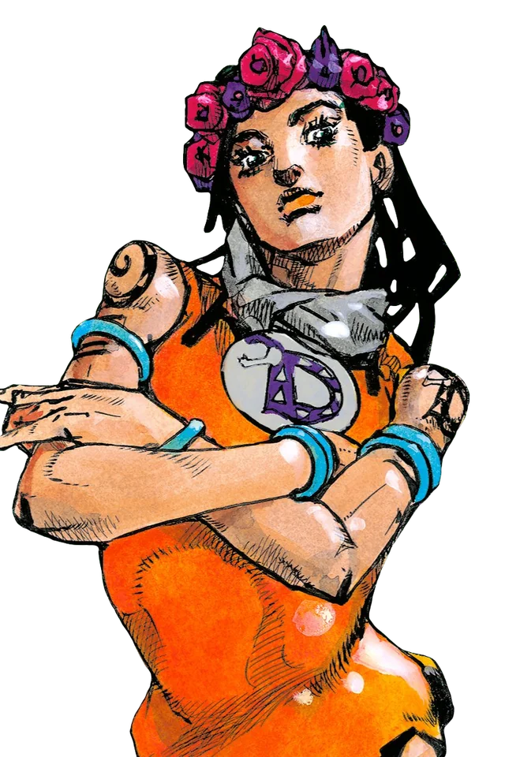
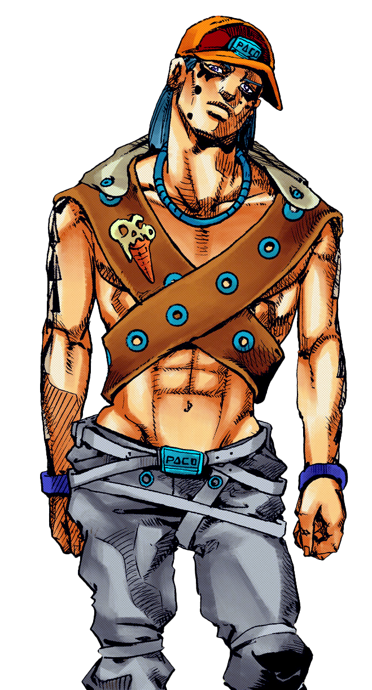
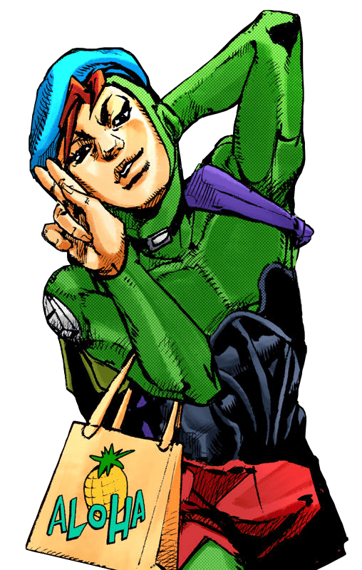

TheJOJOLands • FAN SITEView the Official Site of Shueisha : Here
November Rain's User. His goal is to become rich by mastering the mechanisms of the world.

Elegant and calm. With Smooth Operators, he can move anything, even license plates or facial features.

His physical strength and his Stand "The Hustle" make him a formidable ally to seize all opportunities.

The Matte Kudasai ! A Stand capable of becoming any object, provided that someone else desires it.
